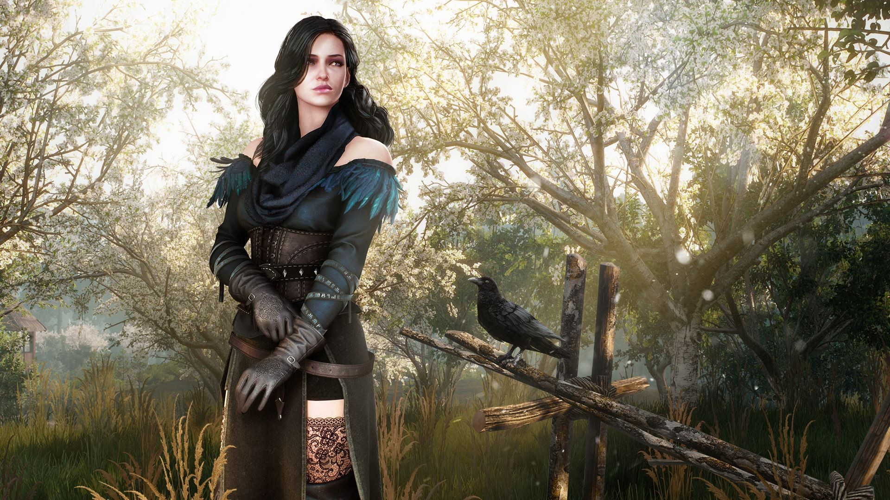
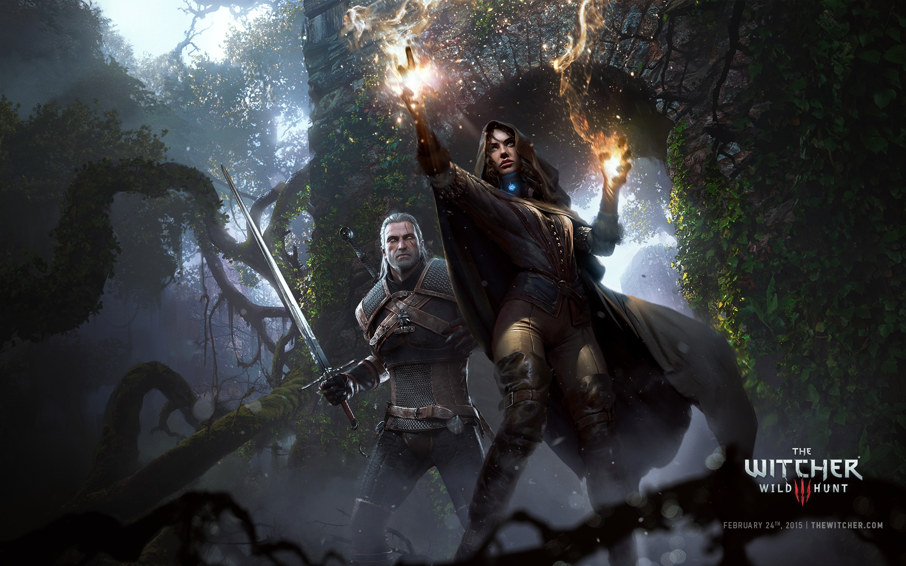

The Witcher 3: Wild Hunt
The Witcher 3: Wild Hunt este un joc RPG creat și publicat de către compania poloneză CD Projekt Red și este bazat pe romanele The Witcher scrise de Andrezej Sapkowski. Este continuarea jocului din 2011, The Witcher 2: Assassins of Kings și este al treilea joc principal din seria The Witcher, jucat într-o lume open world dintr-o perspectivă third-person.
Acțiunea jocului are loc într-o lume fictivă și fantastică bazată pe mitologia Slavonă. Jucatorul îl controlează pe Geralt of Rivia, un mercenar ce vânează monștri cunoscut sub denumirea de Witcher, și o caută pe fiica sa adoptată, care fuge de Wild Hunt venit din altă lume. Jucătorii se luptă cu monștri folosindu-se de arme și magie, interacționează cu NPC-uri, completează misiuni pentru a obține experiență și aur, folosite pentru a îi îmbunătăți abilitățile lui Geralt și a cumpăra echipament. Jocul are trei posibile finaluri, determinate de alegerile jucătorului pe parcursul jocului în anumite puncte cheie.
Crearea acestui joc a început în 2011 și a durat trei ani și jumătate. Culturile Europei centrale și de nord au dat bazele lumi jocului.REDengine 3 le-a permis dezvoltatorilor jocului să creeze o poveste complexă fără să compromită aspectul open world al jocului.
The Witcher 3: Wild Hunt a fost lansat pentru Windows, Playstation 4 și Xbox One în anul 2015 luna mai, iar o versiune pentru Nintendo Switch a fost lansată în Octombrie 2019, urmând să lanseze versiuni și pentru PlayStation 5 și Xbox Series X în 2021. Jocul a primit recenzi pozitive, fiind lăudat pentru gameplay, poveste narativă, design-ul lumii, combat, și grafic, deși a primit și recenzi negative din cauza problemelor tehnice. A primit și numeroase premi ”game of the year” și a fost numit unul dintre cele mai bune jocuri create vreodată. Acesta a mai primit două dlc-uri: ”Hearts of Stone” și ”Blood and Wine”. O ediție Game of the Year a fost lansată în luna August 2016, conținând jocul, cele două dlc-uri și tot contentul care putea fi instalat separat. Peste 28 de milioane de copi au fost vândute, făcând-ul unul dintre cele mai bine vândute jocuri vreodată.
Gameplay: Jucătorii îl controlează pe Geralt din Rivia, un vânător de monștri cunoscut ca ”Witcher”. Geralt merge, fuge, se rostogolește și se ferește, se cațără și înoată, iar pentru prima oară în această serie de jocuri sare. Are o varietate de arme, incluzând bombe, o arbaletă și două săbii, una din argint și una din oțel. Sabia din oțel este, în general, folosită pentru oameni, iar cea din argint este mai eficientă contra monștrilor. Jucătorii pot scoate, schimba sau o pot pune în teacă oricând. Sunt două moduri de a ataca; atacuri ușoare care sunt rapide, dar slabe, și atacuri grele care sunt lente, dar puternice. Jucătorii pot bloca sau contracara atacurile inamicilor cu sabia. Săbiile au o rezistență limitată și trebuie sa fie reparate regulat. Pe lângă atacurile fizice, Geralt poate folosi 5 semne magice diferite: Aard, Axii, Igni, Yrden și Quen. Aard îi permite lui Gerald să elibereze o explozie telekinetică, Axii îi face confuzi pe inamici, Igni îi arde, Yrden îi incetinește și Quen îi oferă jucătorului un scut magic temporar. Semnele folosesc energie, și nu pot fi folosite infinit. Jucătorii pot folosi mutageni pentru a crește puterea magică a lui Geralt. Geralt pierde viată atunci când este atacat de către un inamic, dar purtarea unei armuri ajută la reducerea vieți pe care o pierde atunci când este lovit. Viața își revine atunci când acesta meditează sau folosește consumabile, precum mâncare sau poțiuni. Jucătorii o pot controla pe Ciri uneori, fiica adoptivă a lui Geralt care se poate teleporta pe distanțe scurte.
Jocul are o inteligentă artificială receptivă și avansată precum un mediu înconjurător dinamic. Există un sistem de noapte-zi care influențează anumiți monștri; vârcolaci devin mai puternici în timpul unei luni pline. Jucătorii pot învăța despre inamici și să se pregătească de luptă citind bestiarul din joc. Atunci când ucid un inamic, le pot lua lucrurile valoroase de pe corpuri. Simțul de vânător al lui Geralt le permite jucătorilor să găsească obiecte cu care pot interacționa, incluzând obiecte care pot fi colectate. Itemele sunt păstrate în inventar, care poate fi extins cumpărând upgrade-uri. Jucătorii pot vinde itemele pot fi vândute unor vânzători sau pot fi folosite pentru a crafta poțiuni și bombe. Pot vizita fierari care craftează arme noi și armurieri care craftează armuri noi cu obiectele adunate de jucător. Prețul unui item și costul pentru a-l crafta depinde de economia regiuni. Jucătorii câștigă puncte de experiență completând misiuni. Când un jucător câștigă suficiență experiență, nivelul lui Geralt crește și jucătorul primește un punct pentru abilități. Aceste puncte pot fi folosite pe unul dintre cei patru arbori de abilități: luptă, semne, alchimie și general. Arborele de luptă înbunătățeste atacurile lui Geralt și deblochează noi tehnici de lupte; înbunătățirile semnelor îi permit să folosească magia mai eficient, și alchimia îi înbunătățesc abilitățile de a crafta. Arborele general îi înbunătățesc o varietate de funcți, de la a crește viața lui Geralt până la a crește daunele arbaletei.
Jocul se concentrează pe povestea narativă, și are un sistem de dialog cu mai multe variante care le permiteau să aleagă cum să răspundă npc-urilor. Geralt trebuie să ia decizi care pot duce la 36 de finaluri diferite, afectând viețile personajelor. Pe lângă misiunile principale, cărțile oferă mai multă informație despre lumea din joc. Jucătorii pot incepe misiuni secundare după ce vizitează un afișier din oraș. Aceste misiuni secundare includ și contracte de witcheri, misiuni care îi pun pe jucători să vâneze anumiți monștri, vânători de comori, care îl recompensează pe jucător cu una din cele mai buni armure din joc. Lumea din joc este divizată în mai multe regiuni. Geralt poate explora fiecare regiune pe jos sau cu mijloace de transport, precum bărcile. Roach, calul său, poate fi chemat oricând. Jucătorii pot ucide inamicii călărind-ul pe Roach, dar prezența unui inamic îl poate speria și îl aruncă pe Geralt. Punctele de interes pot fi găsite pe hartă, și jucătorii primesc puncte de experiență după ce completează mini-misiunile din aceste regiuni. Jucătorii pot descoperi locuri ale puterii pentru puncte bonus. Alte activități includ cursele de cai, boxul și jocurile de cărți, mecanica jocului de cărți a fost recreată în propriul ei joc.
 Locul acțiunii: Jocul are loc pe Continent, o lume fantastică înconjurată de dimensiuni paralele și lumi extra-dimensionale. Oamenii, elfii, dwarfii, monștri și alte creaturi coexistă pe Continent, dar non-oamenii sunt de obicei persecutați pentru diferențele lor. Continentul este prins într-un război între imperiul Nilfgaard - condus de către împăratul Emhyr var Emreis, care a invadat Regatele Nordice - și Redania, condusă de către King Radovid V. Apar diferite locați, precum orașul liber din Nilfgaard, orașul Oxenfurt din Redanian, pământul nimănui din Velen, orașul Vizima, insulele Skellige și cetatea Kaer Morhen a witcherilor.
Personajul principal este Witcherul, Geralt din Rivia, un vânător de monștri antrenat încă de mic în luptă, urmărire, alchimie și magie, și făcut mai puternic, rapid și rezistent la toxine de către mutageni. Este ajutat de iubita lui, cea mai puternică vrăjitoare Yennefer din Vengerberg, bardul Dandelion, dwarf-ul luptător Zoltan Chivay, și mentorul lui Geralt Vesemir. Geralt primește un impuls să intre în acțiune atunci când reapare fiica sa adoptiva, Ciri. Ciri este o Source, înnăscută cu abilități magice; dupa aparenta moarte a părinților ei, a fost antrenată ca un witcher cât timp Yennefer o învăța magie. Ciri a dipărut cu câțiva ani în urma pentru a scăpa de Wild Hunt, un scop de luptători spectrali conduși de către Regele Wild Hunt:elful Eredin, dintr-o dimensiune paralelă.

Poveste: În orașul din White Orchard, Geralt se reunește cu iubita lui de mult pierdută, Yennefer. Îl informează pe Geralt ca Împăratul Emhyr l-a chemat în orașul din Vizima. Acolo, Emhyr îl dă lui Geralt sarcina de-a o găsi pe Ciri, care a fost recent văzută în diferite locați. Ciri este un copil cu Elder Blood, ultima descendentă a unei famili străvechi de elfi care îi oferă puterea de-a manipula spațiul și timpul.
Geralt urmează indiciile că Ciri a fost în Velen din Crow's Perch, fortul baronului sângeros. Baronul refuză să îl ajute, dar cunoștința lui Geralt, vrăjitoarea Keira Metz, îl informează că un vrăjitor elf, Avallac'h, o căuta pe Ciri. Keira îl direcționează pe Geralt către Crones din Crookback Bog, spirite străvechi care locuiesc aproape de Velen. Crones-urile îi spun că au capturat-o pe Ciri pentru Wild Hunt, dar a scăpat, și că au înrobit-o pe soția baronului, Anna. După ce soarta Annei este determinată, Geralt se întoarce la Baron care îi spune că Ciri a plecat înspre Novigrad. În Novigrad, Geralt se întâlnește cu fosta sa, Triss Merigold, și află că Ciri l-a contactat pe prietenul său Dandelion. După ce îl salvează pe Dandelion de lumea interlopă, află că Ciri s-a teleportat pe arhipelagul din Skellige.
După ce navighează către Skellige, Geralt o regăsește pe Yennefer, care investiga explozia magică ce avea legătură cu Ciri. Cei doi o urmăresc pe Ciri până pe insula din Lofoten și află că Wild Hunt a atacat-o. Urmărind indiciile, au realizat că Uma, o creatură blestemată din Crow's Perch, a fost prezent când a scăpat Ciri. Îl duc pe Uma la școala abandonată din Kaer Morhen unde Yennefer reușește să elimine blestemul lui Uma, transformându-l ăn Avallac'h. El le spune că a teleportat-o pe Ciri pe insulele cețurilor ca să o salveze de atacul din Lofoten. Geralt călătorește pe insule și o găsește pe Ciri într-o stare de moarte până când este trezită de magia lui Avallac'h. Ciri le spune ca lumea lui Eredin, Regele Wild Hunt, este într-o stare critică din cauza White Frostu-lui, și are nevoie de puterea lui Ciri pentru a putea cuceri Continentul. Ciri și Geralt se teleportează la Kaer Morhen urmarit de către Wild Hunt. Dupa o scurtă reuniune cu Yennefer, Triss, și cu mentorul lor Vesemir, atacă Wild Hunt. Vesemir este omorât protejând-o pe Ciri și această își folosește puterile incontrolabil făcându-l pe Wild Hunt să se retragă.
Ciri și Geralt merg către Novigrad și o ajută pe Triss și Yennefer să reformeze grupul vrăjitoarelor să îi ajute în luptă. De asemenea află despre piatra soarelui, o relicvă care îl poate ademeni pe Eredin afară și să îl blocheze într-o singură locație. În insulele Skelligal din Undvik, Avallac'h folosește piatra soarelui să îl atragă pe Wild Hunt și flota sa. Geralt, Ciri, aliații lor și flota Nilfgaardiană se luptă cu Wild Hunt, Geralt ajunge să se lupte cu Eredin și iese învingător. Cât timp White Frost se aproprie de Skellige, Ciri insistă ca trebuie să îl confrunte cu sângele ei de Elder intrând în portal înainte să consume viața din toate lumile. Ciri intră ăn portal și înfrânge White Frostul.
Finalurile variază în funcție de alegerile făcute pe parcursul jocului. Dupa ce îl înfrânge pe White Frost, dacă Ciri este văzută în viață la sfârșitul jocului atunci poate deveni Împărăteasă sau witcher. Dacă Geralt ajută Nilfgaard să câștige războiul și o ia pe Ciri sa-l vadă pe împărat, aceasta va deveni Împărăteasă, crezând ca este cel mai bun mod de a afecta lumea; dacă Ciri nu îl vede pe Împărat, Geralt îi falsifică moartea și aceasta devine witcher. Dacă Ciri nu este văzută în viață după ce înfrânge White Frost-ul, Geralt asumă că aceasta a murit și vânează ultimul Crone ca să recupereze medalionul furat de la Ciri. În orice caz, soarta lui Ciri este necunoscută în acest scenariu. În funcție de alegerile făcute Geralt se poate pensiona împreună cu Yennefer sau Triss, ori să rămână un witcher singuratic.